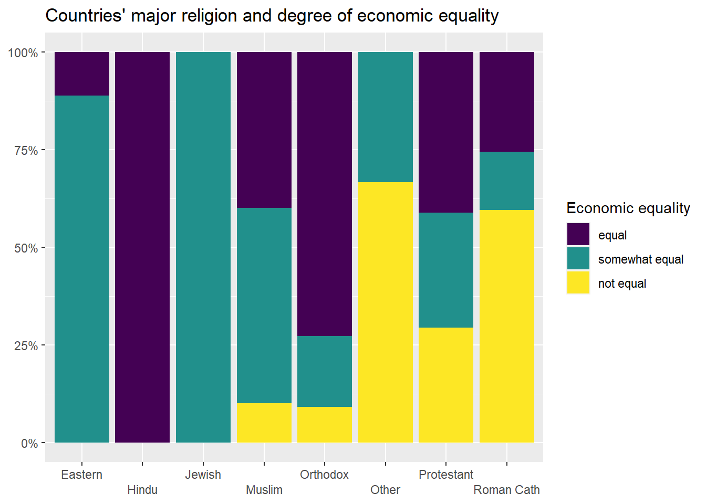

Chapter 7 From chi-squared to somers’ d
7.1 Getting started with this chapter
To get started in today’s chapter, open the project that you made in lab 1. If you forgot how to do this, see the instructions in section 2.2.
Now type install.packages("DescTools") into the Console. This new package will help us calculate Cramer’s V, Lambda, and Somers’ D.
Now, open a new script file and save it in your scripts folder as “chapter 7.2 practice.” Copy and paste this onto the page (updating the text so that it is about you):
####################################
# Your name
# 20093 Chapter 7, Practice exercises
# Date started : Date last modified
####################################
#libraries------------------------------------------
library(tidyverse)
library(Hmisc) #the cut2 command helps us simplify interval variables
library(scales) #this is useful when the labels on our axes overlap
library(tigerstats) #colPerc can also be useful with crosstabs
library(DescTools) #this has tools to calculate Cramer's V, Lambda and
#Somers' D
## Warning: package 'DescTools' was built under R version 4.1.2##
## Attaching package: 'DescTools'## The following object is masked from 'package:mosaic':
##
## MAD## The following objects are masked from 'package:Hmisc':
##
## %nin%, Label, Mean, QuantileNow select all the text on this page, run it, and save it.
7.2 Caculating chi-squared
In chapter 6, we learned two tools to think about relationships between variables: a t-test of independent means and a t-test of independent proportions. These tests let us compare two groups and see whether their means or proportions differ in a statistically significant way. However, what if we want to compare more than two groups at the same time? And, in the case of proportions, what if we want to look at several different proportions at once? For example, the proportion of people that voted for Trump, Biden, Jo Jorgeson, and the other candidates as well?
In other words, to return to a concept from chapter 4, what if we wanted to look at a whole cross tabulation table (a crosstab) and decide whether the values that we observe are likely due to random sampling error, or due to a correlation at the population level?
The most basic way to do that is by calculating chi-squared. That statistic tells us whether the values that we observe in a crosstab are so different from what we would expect to observe if there was no association between at the population level that we can conclude that there likely is such a relationship. For this example, we will think about the relationship between the dominant religion of a country and the degree of economic equality in that country. We will think through that question with help from our world dataframe, using the “Religion” variable and the “UNDP_Gini2014” variable.
Before we generate our crosstab, we first have to deal with an issue: the UNDP_Gini2014 variable is interval. If we generate a crosstab with that variable as the DV, that crosstab will have one row for each value of that variable, which would likely give us hundreds of rows. We don’t want that! Instead, let’s use the technique that we learned in chapter 4 section 4 and simplify that variable into a new variable called “gini3.” First, we will use the cut2 command to generate a variable with three groups:
world$gini3<-cut2(world$UNDP_Gini2014, g=3)Next, we can look at the levels of our new ordinal variable, like this:
Finally, we can rename those levels, like this:
```r
levels(world$gini3)<-c("equal","somewhat equal","not equal")Now, we can generate a crosstab, with this command (remember when generating a crosstab we put our dependent variable first):
addmargins(xtabs(~gini3+Religion, data=world))## Religion
## gini3 Eastern Hindu Jewish Muslim Orthodox Other Protestant
## equal 1 1 0 16 8 0 7
## somewhat equal 8 0 1 20 2 3 5
## not equal 0 0 0 4 1 6 5
## Sum 9 1 1 40 11 9 17
## Religion
## gini3 Roman Cath Sum
## equal 12 45
## somewhat equal 7 46
## not equal 28 44
## Sum 47 135This crosstab gives us raw numbers, which are interesting to look at. It also foreshadows a potential limitation to our conclusions, because we only have one predominantly Jewish state (Israel) and one predominantly Hindu state (India) in our sample, which means that we will be attempting to generalize about those two kinds of states from a tiny sample. We will discuss that more later. To better interpret this crosstab, we need to look at column percents, which we can do with this command:
colPerc(xtabs(~gini3+Religion, data=world))## Religion
## gini3 Eastern Hindu Jewish Muslim Orthodox Other Protestant
## equal 11.11 100 0 40 72.73 0.00 41.18
## somewhat equal 88.89 0 100 50 18.18 33.33 29.41
## not equal 0.00 0 0 10 9.09 66.67 29.41
## Total 100.00 100 100 100 100.00 100.00 100.00
## Religion
## gini3 Roman Cath
## equal 25.53
## somewhat equal 14.89
## not equal 59.57
## Total 100.00Take a look at that table. You can see that there are some pretty noticeable differences in the way that economic inequality is distributed across states with different major religions. For example, the religion with the largest percentage of equal states is Eastern Orthodox, and the religious with the largest percent of not equal states is “Other”, followed by “Roman Catholic.” To help us visualize these differences, we can generate a stacked bar graph using the technique that we learned in section 5.2:
plotting.data<-world %>%
filter(!is.na(Religion)&!is.na(gini3)) %>%
group_by(Religion, gini3) %>%
summarise(n=n()) %>%
mutate(freq = n / sum(n))## `summarise()` has grouped output by 'Religion'. You can override using the
## `.groups` argument.#second, make the graph
ggplot(plotting.data, aes(x = Religion, y = freq, fill=gini3)) +
geom_col(position = "fill") +
scale_y_continuous(labels=percent)+
scale_x_discrete(guide = guide_axis(n.dodge=2))+
scale_fill_viridis_d(name="Economic equality")+
ggtitle("Countries' major religion and degree of economic equality")+
xlab(NULL)+
ylab(NULL)
Clearly, there are differences in the distribution of economic equality in countries with different major religions. But, are these differences statistically significant? To test that, we can ask R to calculate the Chi-squared value that is associated with this relationship. To do this, we can use the chisq.test() command, and in the parenthesis we can put the command that generates crosstab that we want to run this test on. Note: be careful to use the chisq.test() command on the command for a crosstab with actual values and not percents, or the value produced by the test will not be accurate.
Here is how we would generate a chi-squared value for the relationship between dominant religion of a country and degree of economic equality:
chisq.test(xtabs(~gini3+Religion, data=world))## Warning in chisq.test(xtabs(~gini3 + Religion, data = world)): Chi-squared
## approximation may be incorrect##
## Pearson's Chi-squared test
##
## data: xtabs(~gini3 + Religion, data = world)
## X-squared = 56.827, df = 14, p-value = 4.191e-07Look at what R tells us here. First, it reports that it will be giving us the results of a Pearson’s Chi-squared test. Second, it repeats the command that we entered. Third, it reports the value for chi-squared (which it writes as X-squared), tells us our degrees of freedom (calculated by (number of rows-1)*(number of columns-1)) and reports our p-value. Lower p values mean that the relationship that we are observing is more likely to be statistically significant (i.e. not due to random sampling error). In this case, our p-value is very low: 4.191*10-7, or .0000004191, which means that, according to the chi-squared test, this relationship is statistically significant (because 4.191*10-7 is lower than .05, our conventional benchmark).
However, look at warning at the top: R is warning us that this estimate may be wrong. Why? This has to do with the expected values of the cells in our crosstab. Let’s take another look at the crosstab that we generated earlier:
## Religion
## gini3 Eastern Hindu Jewish Muslim Orthodox Other Protestant
## equal 1 1 0 16 8 0 7
## somewhat equal 8 0 1 20 2 3 5
## not equal 0 0 0 4 1 6 5
## Sum 9 1 1 40 11 9 17
## Religion
## gini3 Roman Cath Sum
## equal 12 45
## somewhat equal 7 46
## not equal 28 44
## Sum 47 135Look at top left cell: countries where “Eastern” religions are dominant and that have economic equality. There is one country in that category. If there were no relationship at all between a country’s religion, we would expect that cell to be the row total*the column total/the total number of cases in the table. So, (45*9)/135, which is 3. As a general rule, if some cells in a crosstab have an expected value of less than 5, value of the chi-squared test will be artificially high, and we will be more likely to make Type I error (rejecting a true null hypothesis). In this case, we can actually look at the expected values of all of our cells with this command:
chisq.test(xtabs(~gini3+Religion, data=world))$expected## Warning in chisq.test(xtabs(~gini3 + Religion, data = world)): Chi-squared
## approximation may be incorrect## Religion
## gini3 Eastern Hindu Jewish Muslim Orthodox Other
## equal 3.000000 0.3333333 0.3333333 13.33333 3.666667 3.000000
## somewhat equal 3.066667 0.3407407 0.3407407 13.62963 3.748148 3.066667
## not equal 2.933333 0.3259259 0.3259259 13.03704 3.585185 2.933333
## Religion
## gini3 Protestant Roman Cath
## equal 5.666667 15.66667
## somewhat equal 5.792593 16.01481
## not equal 5.540741 15.31852Looking over this output, we can see that we have many cells with expected values below 5, and thus our estimated chi-squared is less helpful.
7.3 Lambda and the PREs
One way to address the deficiency in chi-squared—that chi-squared is less accurate when the expected values of some of our cells is quite small—is with Lambda. Lambda is the first of several Proportional Reduction in Error (PRE) statistics that we will be learning about in class.
PRE statistics produce a value between 0 and 1 or between 0 and |1| (in the case of PRE statistics that let us look at the direction of relationships). These statistics are useful in interpreting both the significance and strength of relationships. A PRE statistic with a value of 0 means that knowing the independent value has no impact on our ability to correctly predict the value of the dependent variable, while a PRE statistic with a value of 1 (or -1, in the case of a negative relationship) means that knowing our independent variable will allow us to perfectly predict the value of our dependent variable (these kinds of perfect relationships do not exist in actual political science). A PRE statistic of .35, for example, tells us that knowing our independent variable improves our ability to guess the dependent variable by a probability of .35 (or 35%) compared with how good our guess would be if we did not know the independent variable.
Here is a general rule of thumb when interpreting PRE-statistics on social science data (this is based on Pollock and Edwards 2019, 225):
| Range of values | Strength of relationship |
|---|---|
| 0 and .1 | Weak relationship |
| 0 and -.1 | Weak relationship |
| .1 and .2 | Moderate relationship |
| -.1 and -.2 | Moderate relationship |
| .2 and .3 | Moderately strong relationship |
| -.2 and -.3 | Moderately strong relationship |
| Above .3 or below -.3 | Strong relationship |
We can ask R to calculate Lambda in a way similar to the way that we had R calculate chi-square:
Lambda(xtabs(~gini3+Religion, data=world))## [1] 0.2824859In other words, R is telling us that knowing the religion of a country improves the probability that we will correctly guess the level of economic equality in that country by about .28 (or 28%). That is a moderately strong relationship. However, that statistic alone does not tell us about statistical significance (or the chance that the relationship that we observe is due to random sampling error). To fix that, we can add “conf.level=.95” to our command from above (we could also set the confidence level to .99, or .9, or something else, but .95 is the standard in political science). This is our new command:
Lambda(xtabs(~gini3+Religion, data=world), conf.level=.95)## lambda lwr.ci upr.ci
## 0.2824859 0.1715779 0.3933939While this output does not directly report a significance level, unlike the t-tests and chi-squared tests that we ran earlier, the confidence interval that it reports is extremely helpful. This tells is that there is a 95% chance that the true value of Lambda is somewhere between .17 and .39 (which would be a very strong relationship). In other words, we are pretty confident that this relationship is moderate or moderately strong. If this reported interval had included 0, we would have concluded that the relationship was not statistically significant.
7.4 Cramer’s V
Lambda sometimes underestimates the strength of a relationship when there is little variation between the overall mode of a sample and the modes of each of our groups. In that case, we can use Cramer’s V instead. Or, given how easy it is to ask R to calculate these statistics, we can actually ask R to calculate chi-squared, lambda, and Cramer’s V, and if they provide similar information, that is a good sign that there might be something to our hypothesis.
Unlike Lambda, Cramer’s V is not a PRE statistic, which means that we can’t interpret it in terms of improved probability of guessing our dependent variable with knowledge of our independent variable. However, like Lambda, it reports a statistic between 0 and 1, and higher values mean that we have a stronger relationship. We can also use the same ” conf.level=.95” qualifier to get a confidence interval around our estimate, like this:
CramerV(xtabs(~gini3+Religion, data=world), conf.level=.95)## Cramer V lwr.ci upr.ci
## 0.4587703 0.2721846 0.5290952Seeing this confidence interval with a lower bound nowhere near zero gives us additional evidence that there is likely a relationship between religion and economic equality at the population level.
7.5 Somers’ D
All of the measures of association that we have looked at so far have been useful for thinking about the relationship between two ordinal or nominal variables. But if we have two ordinal variables, we can also start to think about the direction of our relationship. In other words, we can go beyond asking whether knowing our independent variable helps us predict our dependent variable and ask whether an increase in our independent variable leads to an increase (or decrease) in our dependent variable.
This kind of question does not make sense when discussing nominal variables, such as marital status. In other words, it does not make sense to ask whether marital status “increasing” leads to income increasing, because there is no order in which the values for the marital status variable (divorced, married, never married, separated, and widowed) must be listed.
Let’s focus on two ordinal variables in the anes2020 dataframe as an example: freedomofpress and trustmedia. The freedomofpress variable is an answer to the question “How important is it that news organizations are free to criticize political leaders?” Respondents were given 5 choices ranging from “extremely important” to “not important at all.” In other words, this variable is a measure of respondents’ general commitment to the principle of freedom of the press.
The trustmedia variable is an answer to the question “In general, how much trust and confidence do you have in the news media when it comes to reporting the news fully, accurately, and fairly?” Respondents were given five choices ranging from “none” to “a great deal.”
My theory is that people with more commitment to the principle of freedom of the press might therefore trust the media more, because commitment to the principle of freedom of the press suggests that a respondent believes in the potential for the press to do good work, and is thus more likely to see the press doing good work and therefore trust the press. Before we can do our statistical tests of this theory, we can take a look the data in graphics and crosstabs to see whether the data seems to support our theory.
We can use the following two commands to generate a crosstab and a table of the columns percentages (notice that I put the dependent variable, trustmedia, first in these commands):
xtabs(~trustmedia+freedomofpress, data=anes2020)
colPerc(xtabs(~trustmedia+freedomofpress, data=anes2020))One tip before we move on: R is almost always willing to create an object so that you don’t have to keep typing the same things over and over. So, in this case, you can make your crosstab an object called media.table like this:
media.table<-xtabs(~trustmedia+freedomofpress, data=anes2020)Then, to see what that table looks like, you can run this line of code:
media.table## freedomofpress
## trustmedia extremely important very important moderately important
## none 594 449 579
## a little 531 417 485
## some 989 554 578
## a lot 804 245 115
## a great deal 326 59 41
## freedomofpress
## trustmedia a little important not important at all
## none 231 527
## a little 210 178
## some 124 97
## a lot 27 18
## a great deal 19 18After that, to generate the table with column percents, you can go like this:
colPerc(media.table)## freedomofpress
## trustmedia extremely important very important moderately important
## none 18.31 26.04 32.20
## a little 16.37 24.19 26.97
## some 30.49 32.13 32.15
## a lot 24.78 14.21 6.40
## a great deal 10.05 3.42 2.28
## Total 100.00 100.00 100.00
## freedomofpress
## trustmedia a little important not important at all
## none 37.81 62.89
## a little 34.37 21.24
## some 20.29 11.58
## a lot 4.42 2.15
## a great deal 3.11 2.15
## Total 100.00 100.00Let’s look at the second table, with the percents. This is telling us that among those who think that freedom of the press is extremely important, 18.31% have no trust in the media. However, among those who do not think that freedom of the press is important at all, 62.89% have no trust in the media. That seems like a pretty strong piece of evidence for our theory!
We have a number of choices for how to represent this relationship graphically. Since we reviewed a stacked area graph earlier in this chapter (which would be a cool way of looking at this relationship), for this section let’s generate a bar graph with error bars around the 95% confidence interval for one of the values of our dependent variable. We already did this in section 6.6, but here is the code that will help us generate a graph for this data:
plotting.data<-anes2020 %>%
filter(!is.na(trustmedia)) %>%
filter(!is.na(freedomofpress)) %>%
group_by(freedomofpress) %>%
summarise(
n=n(),
numerat=sum(trustmedia=="none")) %>%
mutate(proportion=numerat/n) %>%
rowwise() %>%
mutate(lower_ci = prop.test(numerat, n, conf.level=0.95)$conf.int[1]) %>%
rowwise() %>%
mutate(upper_ci = prop.test(numerat, n, conf.level=0.95)$conf.int[2])
ggplot(plotting.data) +
geom_bar(aes(x=freedomofpress, y=proportion), stat="identity", fill="purple", alpha=0.5) +
geom_errorbar(aes(x=freedomofpress, ymin=lower_ci, ymax=upper_ci), width=0.4, colour="black", alpha=0.9, size=1.5) +
ggtitle("Importance of press freedom and trust in the media, ANES 2020",
subtitle="Error bars represent 95% confidence intervals")+
xlab("How important is press freedom?")+
ylab("Proportion with no trust in media")
Notice that the bars are going in the way our theory predicted – people that think that press freedom is less important also seem to trust the press less. The error bars on these columns do not seem to overlap with the exception of the upper bar on the “moderately important” column and the lower bar in the “a little important” column. In other words, most of these differences seem to be statistically significant, and the relationship is heading in the direction that we predicted.
However, what are we to make of those overlapping error bars? And what about all of the data that is not on this graph (i.e. all four other values on media trust)? We can run the tests that we learned about earlier this chapter on our crosstab with the following commands.
First, if you didn’t generate the crosstab object before, you can do that now like this:
media.table<-xtabs(~trustmedia+freedomofpress, data=anes2020)Now you can simply execute these three commands:
chisq.test(media.table)##
## Pearson's Chi-squared test
##
## data: media.table
## X-squared = 1350.3, df = 16, p-value < 2.2e-16Lambda(media.table, conf.level = .95)## lambda lwr.ci upr.ci
## 0.04627059 0.03725581 0.05528537CramerV(media.table, conf.level = .95)## Cramer V lwr.ci upr.ci
## 0.2027150 0.1907419 0.2124269These three tests all show a statistically significant relationship. The reported Lambda is pretty weak, but this could be because of the tendency of Lambda to sometimes underestimate the strength of relationships when the subgroup modes are too similar to the sample mode (if you look at the crosstab with percents above you will see that at four of the five levels of our independent variable, the modal respondent reports no trust in the media, which is also the sample mode).
The statistics that we just calculated let us discuss the strength (in the case of Lambda) and significance (in the case of Cramer’s V and chi-squared) of the relationship that we are interested in, but how about the direction? To examine the direction of a relationship between two ordinal variables, we can use a Somers’ D test. Somers D is a Proportional Reduction in Error (PRE) statistic like Lambda. Unlike Lambda, however, which ranges from 0 to 1, Somers’ D can range from 0 to 1 OR -1. A perfect negative relationship, where knowledge of the independent variable lets us guess the value of the dependent variable with absolute certainty, would generate a Somers’ D score of -1, while a perfect positive relationship would generate a Somers’ D score of 1. A Somers’ D score of 0 means that knowing the independent variable gives us no insight at all in predicting the dependent variable.
Before we run Somers’ D, we need to see whether our hypothesis is predicting a positive or a negative relationship. What does it mean to “increase” or “decrease” on those two variables? For this, we can use the levels() command, like this:
levels(anes2020$freedomofpress)## [1] "extremely important" "very important" "moderately important"
## [4] "a little important" "not important at all"levels(anes2020$trustmedia)## [1] "none" "a little" "some" "a lot" "a great deal"The levels() command only works with ordered factors (which is how R treats ordinal variables), and the output lists the scores of the variable from low to high. So, the lowest value on freedomofpress mean that the respondent thinks that freedom of the press is “extremely important”, while the highest value means that the respondent thinks that freedom of the press is “not important at all.” Increasing values means less respect for freedom of the press. With “trustmedia”, the lowest value means that the respondent has no trust in the media, while the highest value means that the respondent has “a great deal” of trust in the media. Increasing values means more trust in the media.
Since our hypothesis is that more respect for freedom of the press leads to more trust of the media, we thus hypothesize a negative relationship between our two variables.
We run Somers’ D just like how we ran Cramer’s V, Lambda, and chi-squared, above:
SomersDelta(xtabs(~trustmedia+freedomofpress, data=anes2020), conf.level=.95)## somers lwr.ci upr.ci
## -0.3069552 -0.3239353 -0.2899751If you made the media.table crosstab object above, you can also run Somers’ D on that, like this:
SomersDelta(media.table, conf.level=.95)This is telling us that there is a .95 probability that Somer’s D at the population level is between -.32 and -.29. In other words, we are pretty confident that there is a strong (or moderately strong), significant, and negative relationship between belief in freedom of the press and trust in the media.
One note: Somers’ D is an asymmetric test, which means that it gives different results when you treat one of your two variables as independent than when you treat that same variable as dependent. So, be careful to list your dependent variable first when setting up your test.
7.6 Review of this chapter’s commands
| Command | Purpose | Library |
|---|---|---|
| chisq.test() | Runs a chi-squared test on a pair of variables. In this class we use it on crosstabs that we generate with the xtabs() command, but you can also use it on a table that you generate with other commands or on a pair of variables that you define with a $. | Base R |
| Lambda() | Runs a Cramer’s V test (a test of the relationship between two nominal or ordinal variables) on a pair of variables. In this class we use it on crosstabs that we generate with the xtabs() command. | DescTools |
| CramerV() | Runs a Lambda test (a PRE test of the relationship between two nominal or ordinal variables) on a pair of variables. In this class we use it on crosstabs that we generate with the xtabs() command. | DescTools |
| SomersDelta() | Runs a Somers’ D test (a PRE test of the relationship between two ordinal variables) on a pair of variables. In this class we use it on crosstabs that we generate with the xtabs() command. | DescTools |
7.7 Review exercises
Let’s practice some of the things that we learned in this chapter.
- Create a new R script called “Chapter 7 Exercises,” and save it to your R scripts folder. Make a header for the script based on the description from section 2.3. Use the library() command to load the tidyverse, Hmisc, scales, tigerstats, and DescTools libraries.
- Choose an interval variable from either anes2020, states2010, or world that you want to think about as a dependent variable (don’t choose one of the variables that we used as an example in this chapter). Use cut2 to convert that variable into an ordinal variable with at least three values. Using mutate(recode()), label the values of that variable in a way that makes sense. Generate a graphic to show that variable’s central tendency and dispersion (using the technique from section 3.2).
- Create a new file in your word processor. Paste the graphic that you generated from #2 into your word processor file. In a few sentences, discuss the central tendency and dispersion of that variable.
- Choose a second ordinal or interval variable from the same dataset that you used for #2. If the variable is interval, use cut2 to make it an ordinal variable, and use mutate(recode()) to label the values in a way that makes sense.
- In your word processor file, briefly generate and discuss a hypothesis. What do you expect to see in this relationship and why?
- Using xtab() and colPerc(xtabs)), generate crosstabulation relationships between these two variables.
- Graph the relationship between these two variables using the techniques that we reviewed in section 7.5 of today’s chapter or using a stacked bar graph that we reviewed in section 7.2 of today’s chapter. Paste your graph into your word processor, making sure that the labels make sense.
- Conduct a chi-squared test, a Lambda test, a Cramer’s V test, and a Somers D test of this relationship, and paste the key output into your word processor file.
- Based on the output from #8, write a few sentences about what you conclude about your hypothesis and why? Is the relationship statistically significant? Is it strong? It is ok if your results do not support your hypothesis. That is how science works!